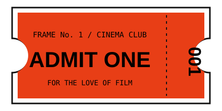
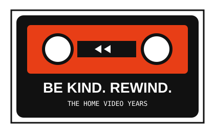
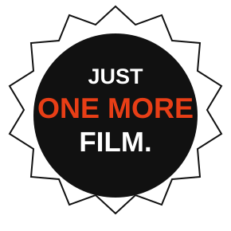

THE PROJECT / DESIGN & DEVELOPMENT
About Frame No. 1.
An independent cinema archive created to help people discover films and learn about their directors.

Why this website exists
FRAME No. 1 was created with the intention of making cinema easier to explore. With so many films to choose from, it can be difficult to know where to begin—especially when the titles and directors are unfamiliar. Created with a love of film, this collection brings together classics and other essential watches to offer a clear starting point.
Browse the archive, explore director profiles, keep a personal film journal and work through checklists at your own pace.
Design & creative direction
The project concept, visual direction, reference selection and design decisions were developed by Martina. Her initial designs and references guided the website’s typography, colours, imagery and layout.
ChatGPT and Codex helped explore mockups, implement the designs in code and refine layouts through feedback. The final website reflects that iterative process.
AI DISCLOSURE
How AI was used
This website was developed with assistance from OpenAI’s ChatGPT and Codex. AI helped write and revise HTML, CSS and JavaScript, prepare design studies, organise data, draft some editorial content and run development checks.
AI-assisted writing is identified in the article and source credits. Director biographies use attributed Wikipedia excerpts. The film posters, portraits and scene images are sourced from real films and reference collections; they are not AI-generated substitutes.
How it works
- HTML
- Page structure, navigation, film details and accessible forms.
- CSS
- Typography, responsive layouts, colours and print styles.
- Vanilla JavaScript
- Search, filters, ratings, watched status, checklists and journal controls.
- Local JSON data
- The catalogue contains 129 films and 75 director profiles. Browsing does not require a private film API key.
- Python & GitHub Actions
- A small script prepares newspaper headline links. Scheduled refreshes are configured for GitHub Pages deployment.

Your journal & privacy
Your watched films, favourites, watchlist, ratings, notes and personal lists are stored in this browser’s LocalStorage. There is no account or cloud database, so entries do not automatically sync between devices.
Clearing browser data can remove your journal. Export a backup from My Frames to keep a copy. Personal checklists can also be printed or saved as a PDF. No analytics or advertising trackers are included.
Sources & image credits
Film information and biographies have linked references. Posters, portraits and scene images belong to their respective rights holders; source and licence records are listed separately. No blanket rights clearance is claimed.
Read the sources and editorial credits
View image sources and rights records
Film News displays dated headline links from The Guardian’s public Film RSS feed. Articles open on the publisher’s website. FRAME No. 1 is not affiliated with The Guardian, OpenAI or the film studios represented.

Project status
This is a university website project built as a functional static site and prepared for GitHub Pages. It includes responsive layouts, semantic HTML, keyboard focus styles and checks for links, catalogue records and journal behaviour.
The collection is a starting point rather than a complete history of cinema. Articles and factual information should be reviewed as the project develops. Automatic news updates depend on the deployed GitHub workflow.